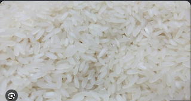

Garlic Butter Rice
Servings: 6
Estimated Cost for 6 People: $4.50-$5.50 total
Ingredients
- 1.5 cups long-grain white rice (or jasmine rice), rinsed
- 2.5 cups low-sodium chicken broth
- 4 tbsp unsalted butter
- 1.5-2 tbsp minced garlic
- 1/4 cup yellow onion, finely chopped
- Salt to taste
- Black pepper to taste
Directions
- Melt 1 tbsp butter in a large saucepan over medium heat.
- Add the onion and cook for 3 minutes until tender.
- Stir in the garlic and cook for 1 minute until fragrant.
- Add the chicken broth, salt, and pepper and bring to a boil.
- Add the rinsed rice and stir once.
- Cover with a tight-fitting lid and reduce heat to low.
- Simmer for 15-18 minutes.
- Remove from heat and let rest for 5-10 minutes.
- Fluff the rice and stir in the remaining 3 tbsp butter.
- Serve warm.

Nutrition Information (Per Serving)
| Calories | Carbohydrates | Protein | Fat |
|---|---|---|---|
| 220 | 30 g | 4 g | 10 g |
Major Macromolecules Present
- Carbohydrates: White rice, onion
- Protein: Rice, chicken broth
- Lipids (Fat): Butter